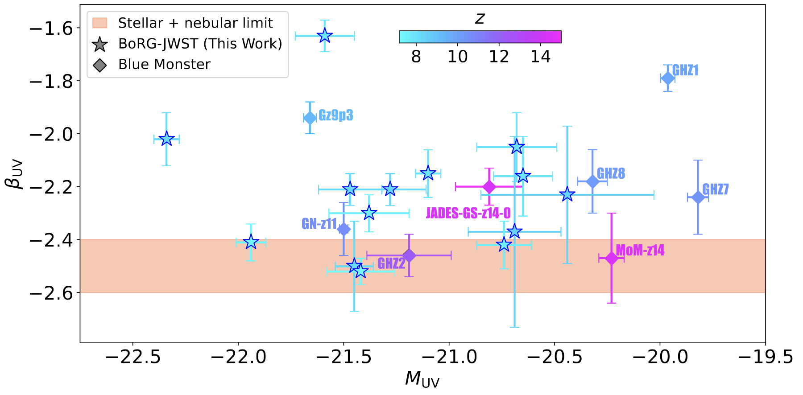
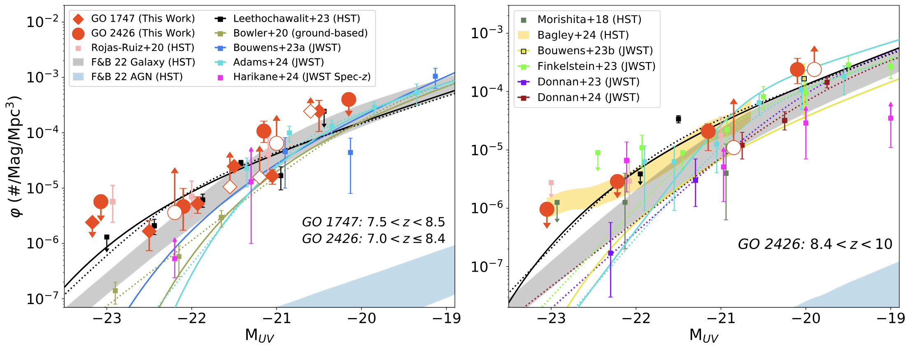
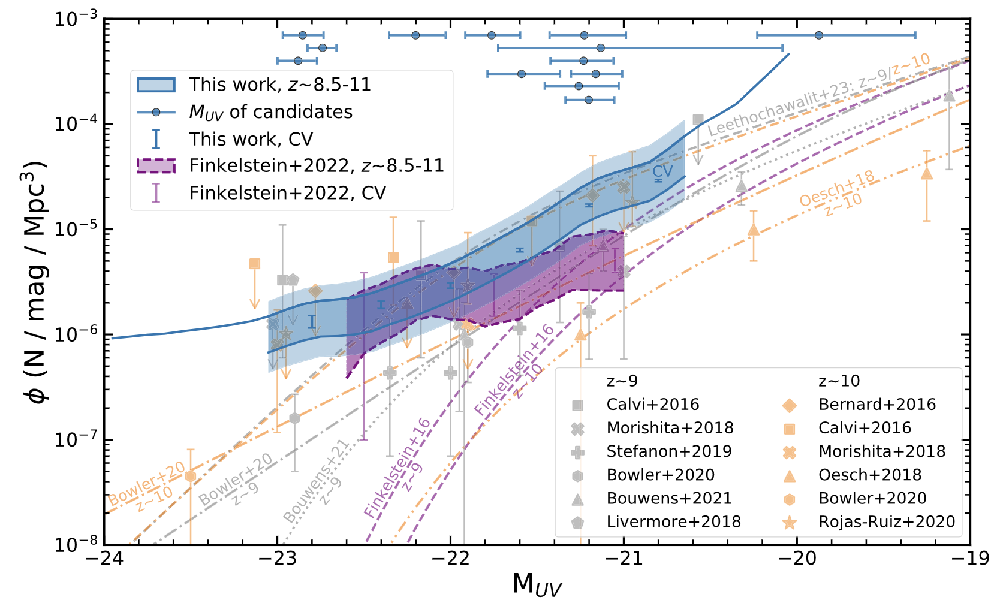

Galaxias y Agujeros Negros Supermasivos en la Época de Reionización
Mi área de especialización es la Época de Reionización (EdR), es decir, el periodo en que el Universo salió de la total oscuridad. Este proceso ocurrió en algún momento de los primeros mil millones de años del Universo (o a alto redshift z ≳ 6), cuando las primeras galaxias se volvieron lo suficientemente poderosas para ionizar el hidrógeno neutro que llenaba el Universo. Dentro de toda la ciencia fascinante de la EdR, me he enfocado en estudiar fuentes ionizantes como las galaxias masivas y brillantes y los cuásares, que son galaxias con un agujero negro supermasivo activo en su núcleo.
Publicaciones
Artículos que lideré o en los que contribuí significativamente, del más reciente al más antiguo.

Chasing Cosmic Reionization: An Extremely Faint, Highly Magnified Source at z = 5.66 with High ξion
Les presento a SALSA: una galaxia diminuta y de extremadamente baja luminosidad, muy eficiente en producir fotones ionizantes. Solo es detectable gracias al lente gravitacional del cúmulo de galaxias A2744.
Validé el pipeline de reducción de datos RegalJumper para espectroscopía de campo integral (IFU) de JWST/NIRSpec en una fuente extremadamente tenue, lo combiné con espectroscopía de VLT/MUSE e imágenes de NIRCam para resolver la fuente en dos grumos, corregí por la magnificación del lente y medí su eficiencia de producción de fotones ionizantes y su metalicidad.
Lee el artículo
The BoRG-JWST Survey: Analogs at z ∼ 8 to the UV-luminous Galaxy Population at z > 10
Las galaxias de BoRG-JWST a z ∼ 8 comparten muchas características con las sorprendentemente luminosas galaxias que JWST está encontrando a z > 10, conocidas como “Blue Monsters”, así que sirven como análogos más cercanos y más fáciles de estudiar. Sus historias de formación estelar las dividen en “Blue Zombies”, que formaron la mayor parte de su masa temprano, y “Recent Blue Monsters”, que la formaron toda en los últimos ∼140 millones de años.
Ajustes de líneas de emisión con bootstrap para 14 galaxias confirmadas; un diagnóstico de cocientes de líneas para distinguir AGN de formación estelar, limitado por la baja S/N y resolución de los espectros; historias de formación estelar no paramétricas, fuertemente preferidas sobre modelos simples (ΔBIC ≈ 400–7000); y una prueba Anderson–Darling de k muestras (scipy), adecuada para muestras pequeñas de siete galaxias por grupo, que muestra dos historias distintas de ensamblaje de masa estelar (p = 0.004).
Lee el artículo
The BoRG-JWST Survey: Abundance and Mass-to-light Ratio of Luminous z = 7–9 Galaxies from Independent Sight Lines with NIRSpec
¿Qué tan comunes son las galaxias más brillantes en los primeros 800 millones de años? Usando muchas regiones independientes del cielo, medimos su abundancia y cuánta masa estelar se esconde detrás de su luz.
Un estimador bayesiano (MCMC con emcee y una verosimilitud de Poisson) para la abundancia de 11 galaxias confirmadas en 8 campos independientes, propagando las incertidumbres de cada fuente con 1,000 realizaciones, y una regresión lineal bayesiana para una relación de escala casi lineal (pendiente 0.85 ± 0.12, dispersión intrínseca 0.45 dex).
Lee el artículo
First Measurements of Black Hole Accretion and Radio-jet Timescales in a Young Quasar at the Edge of Reionization
Por primera vez, estimamos cuánto tiempo lleva creciendo el agujero negro de un cuásar y qué edad tiene su chorro de radio, en el cuásar P352–15 a z ≈ 6.
Dos modelos físicos rivales de 5 parámetros ajustados (minimización de χ2) a 25 mediciones de varios observatorios, ambos con χ2 reducido < 1, más un modelo PCA entrenado con 4,579 espectros para reconstruir la emisión Lyα, con estimaciones consistentes de la edad del agujero negro y el chorro de radio.
Lee el artículo
The BoRG-JWST Survey: Program Overview and First Confirmations of Luminous Reionization-Era Galaxies from Pure-Parallel Observations
El programa BoRG-JWST hace seguimiento con espectroscopía de JWST a candidatas a galaxias brillantes encontradas en campos “pure-parallel” del Hubble. Este artículo presenta el censo y sus primeras galaxias confirmadas en la Época de Reionización.
Espectroscopía con el prisma de NIRSpec de candidatas seleccionadas en imágenes “pure-parallel” del HST, comparando los redshifts espectroscópicos con las predicciones fotométricas.
Lee el artículo
Exploring the Mpc Environment of the Quasar ULAS J1342+0928 at z = 7.54
¿Viven los primeros cuásares en vecindarios concurridos? Buscamos galaxias alrededor de uno de los cuásares más lejanos conocidos para mapear su entorno a escala de megapársecs.
Selección de candidatas a galaxias compañeras alrededor del cuásar y comparación estadística con conteos de galaxias en campos vacíos.
Lee el artículo
Bright z ∼ 9 Galaxies in Parallel: The Bright End of the Rest-UV Luminosity Function from HST Parallel Programs
Combinando varios programas en paralelo del Hubble, encontramos candidatas a galaxias brillantes a z ∼ 9 y medimos qué tan comunes son las galaxias tempranas más brillantes.
Selección de candidatas en muchos campos paralelos independientes del HST y ajuste de la función de luminosidad.
Lee el artículo
The Impact of Powerful Jets on the Far-infrared Emission of an Extreme Radio Quasar at z ∼ 6
Los chorros de radio de P352–15 son tan potentes que su emisión contribuye incluso en longitudes de onda milimétricas, donde normalmente solo vemos el polvo frío de la galaxia anfitriona.
Integración en Python de datos de varios observatorios, desde rayos X hasta radio, y modelado de la SED para separar la emisión de sincrotrón de la emisión del polvo.
Lee el artículo
Probing the Bright End of the Rest-frame Ultraviolet Luminosity Function at z = 8–10 with Hubble Pure-parallel Imaging
Buscamos galaxias brillantes en los primeros 500 millones de años con el censo BoRG del Hubble y encontramos 11 candidatas a z > 7, con las que medimos el extremo brillante de la función de luminosidad.
Un pipeline en Python para seleccionar galaxias (Source Extractor, EAZY) en 90 campos independientes del HST; un DecisionTreeClassifier entrenado con datos etiquetados a mano que redujo las candidatas de 579 a 82 (86% menos revisión manual); y 1.8 millones de simulaciones de inyección y recuperación para cuantificar el sesgo de selección.
Lee el artículoCharlas
Mira esta charla que di en el Hypatia Colloquium mostrando los resultados de mi trabajo sobre la SED de P352-15 en longitudes de onda milimétricas y de radio.